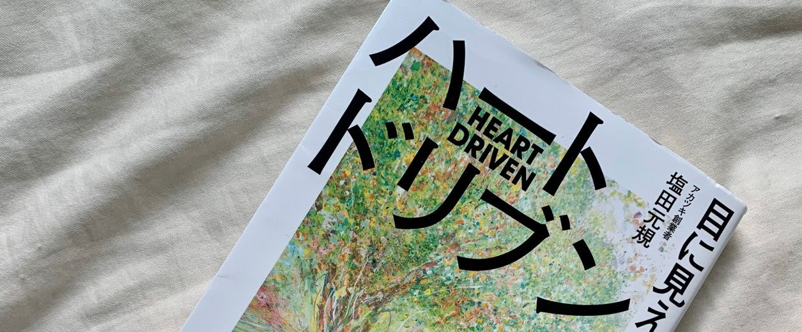
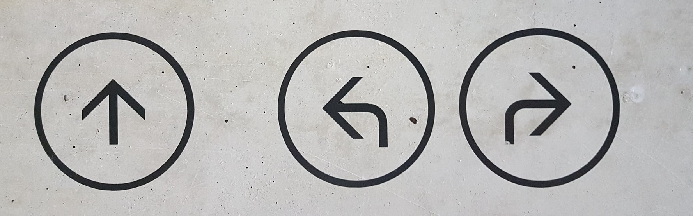

感情価値とは？
ハートドリブンの真髄へ！

タイトルでもあるのだが、この本では
「目に見えないものを大切にする力」
を説いている。
・リアルタイムで世界に起きている変化
・インサイド・アウト
・魂の進化
・まとめ
- リアルタイムで世界に起きている変化
- インサイド・アウト
- 魂の進化
- まとめ
リアルタイムで世界に起きている変化
まず、世界に起きている変化として
① 便利さ(機能的価値)の時代から、心(感情価値)の時代へ
② 画一的な価値観から、多様な価値観を認め合う時代へ
③ 透明性の加速。DoingからBeingの時代へ
というこの３つを話している。
なぜそんな変化が起きようとしているかというと、
AIを中心とした技術の進歩によって、
ますます便利になった世界では物質的な満足より
精神的な満足が求められるからだ。
働き方も大きく変わるだろう。
キングコング西野孝之さんのオンラインサロンや、
幻冬舎の編集者、箕輪さんのオンラインサロンはご存知の方も多いだろう。
コミュニティに入るためにはお金を支払わなければならない。
しかし、そのコミュニティの中で働いている人がいる。
お金をわざわざ支払って入っているのにもかかわらずだ。
そう。仕事はもはや
「お金を得るためのもの」
から
「感情報酬を得るためのもの」
にシフトチェンジしてきているのだ。
100年以上もの間工事が続けられている世界遺産「サクラダファミリア」。
そこで働く人はもちろんお金をもらっているわけだが、これからは、
「お金を払ってまでもそんな貴重な仕事をしたい」
という人が現れてもおかしくない。
物質的な満足よりも精神的な満足を求める時代がこれからもっとやってくる。
インサイド・アウト

それに伴って、
「なにをしているか」
という外側以上に、
「在り方や内側の想い」
が重要な時代にシフトしてくる。
そんな時代に必要な考え方は
インサイド・アウトだ。
これは「７つの習慣」で述べられていることだが、
世界を変える順番は
「外側から内側」ではなく、
「内側から外側」だということ。
私たちは周りの環境に愚痴をいう事も少なくない。
しかしそれは、私たちが色眼鏡で世界を見ているだけ。
周りの環境を変えるためには、その環境を変えるのではなく
自分の世界の捉え方を変えるだけで、環境は何色にでも変化するのだ。
魂の進化
そんな自分の内側を成長させることを、著者である塩田さんは
「魂の進化」
と表現している。
そんな魂の進化のためには
「ネガティブな感情も認める」
ことが重要だ。
プライドの高い人は、
「弱いところをみせてはいけない」
「人に甘えてはいけない」
そんなことを、無意識ながらにでも感じながら生きている。
だからこそ、他人が弱いところを見せていたり、甘えているところを見ると、
「自分はダメなのになんであいつだけ…」
という怒りの感情が自分への抑圧によって生まれる。
上でも述べた通り、これからは
「画一的な価値観から、多様な価値観を認め合う時代」
になる。
だからこそ、他人の価値観を尊重するのはもちろん、
自分のネガティブな感情すらも、抑圧せずに大切に扱うことがすごく重要だ。
しかし、そんなネガティブな感情は自分では気づかないところで現れる。
だからこそ「メタ認知」が重要であり、そのためには他者の意見がカギを握ってくる。
自分一人ではとても厳しい作業だ。
アフリカの先住民にこんなことわざがあるそうだ。
早く行きたければ、一人で行きなさい。
遠くまで行きたければ、一緒に行きなさい。
まとめ
正直、ここにはまとめきれないほどの内容なので実際に手に取って読んでほしい。
これまで意識したことなかった感情や、抑圧してきた感情に向き合うきっかけになるかもしれない。
AIなどの技術がこれまで以上に進化していく未来において、
「人間にしかできないこと」
はやっぱり心を動かすことだと思う。
非効率でも楽しい、無駄が多くても楽しい
そんな感情価値が重要視される未来はもうすぐだ。